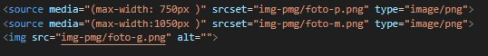

Curso em vídeo do Gustavo Guanabara.
Nessa Playlist
continuarei fazendo os exercicios do aplicativo Mimo
Dominio:
Hospedagem:
Expecificações sobre URL
Front-end: Desenvolvedor cliente-side, responsável pela visuzalização direta da interface do cliente. Garantir boa experciência para o usuário.
Back-end: Desenvolvedor server-side, responsável pelos códigos dos servidores. Exemplos de linguagens: PHP, JavaScript (Node), C#(sharp), Python, Ruby, Java
Full-stack: Desenvolvedor das duas áreas: Front e Back
Se dedique! escolha uma área para se especializar. Comece por uma depois vá para outra
<p> e </p>
Emojipedia
A regra é detectar os codepoint do emoji: &#x(inseri o codigo do emoji depois do "+");.
Por exemplo: 🤩
Site para montar icones ou formatar para .ico: Favicon
Utilizando o código dentro da head <link rel="shortcut icon" href="seu-icone-aqui" type="image/x-icon">
Tags Html:
" < tag > " aberta
" < / tag > " fechada
Para cada tag sempre deve abrir e fechar.
Alguns Elementos:
p: Parágrafo
h1(maior) ao h6(menor): Cabeçalhos
br: Quebra de Linha (Essa tag não precisa fechar)
em: Itálico
strong: Negrito
Existe também a tag "Button" que por sua vez cria um botão.
< img > (Assim como o < br >, também a tag não precisa fechar)
Para adicionar uma imagem precisamos do atributo src=" URL.png "
Também pode se utilizar atributos para aumentar o tamanho das imagens, isso utilizando por pixel.
Largura: (= Width " 100 ") & Altura: (=Height " 100 " )
< img src = " url de uma imagem aqui "
Ajustar o tamanho: width =" 100 " height =" 100 " >

Tag picture junto com a tag source media srcset type pode manipular os tamanhos das imagens de acordo com o dispositivo de tela usado. Isso é importante para o UX (experciência do Usuário)
a ordem da source faz todo sentido de como vai ser trocada a imagem, sempre deve ser do menor para o maior.
Código usado:
Este vídeo está hospedado no meu servidor
Observações:
A ordem da sourcetem total importância, ele tenta carregar sempre do primeiro até o último e carregar o compativel com o navegador do usuário
Atributos da tag video:
width indica o tamanho que vai exibir na tela poster indica a thumb do vídeo, enquanto o visitante não der play no video. controls vai configurar se os controles vão aparecer na parte inferior do video. por padrão os controles não aparecem autoplay indica se o navegador irá começar a rodar o vídeo assim que a página carregar loop reinicia o vídeo após chegar no final
Clicando em compartilhar, tem a opção de incorporar. Copie ela e cole no seu código.
Nele é possível trocar os tamanhos em width e height
Vimeo é tipo um Youtube, porém tem como deixar os vídeos privados de forma paga e assim incorporar no seu site. Vantagem dele é a forma de como pode ter uma personalização da interface para mostrar no site,
APERTURE from Emanuele Kabu on Vimeo.
Para criar um link começamos sempre com a âncora: a
Para vincular uma página da web preciso adicionar o href=" URL "
href siginifica referência de hipertexto
A junção da âncora com href=" URL " cria um hiperlink para qualquer página desejada da web
Atributos:
target="blank" para criar uma página em branco e acessar o devido site
rel="external" indicar que o site é outro, não o seu.
rel="nofollow" informa ao navegador que você não dá aval à página
Atributos
rel="prev" para indicar o navegador que é a página anterior do meu site
rel="next" indicar que é a página seguinte do site
target="_self" indicar que está no meu site.
../ para voltar pastas dentro do site
./ entrar nas pastas do site. Recurso para aprender do Linux
Link para estudar linux
dica: utilizando o / também da pra acessar qualquer página, isso pelo visual studio
< input > Tag: < input placeholder = "" >
O atributo placeholder faz que dentro do input fique o nome com opacidade baixa, esteticamente fica mais bonito.
É sempre bom definir o type do seu input.
Alguns dos "types":Texto:
Password:
Range:
Checkbox:
Date:
Color:
< div > < / div >
Utilizado para criar uma divisão dos Elementos, como se fosse organizar por uma pasta, você separa ela de todo resto do corpo.
Somente visivel na estrutura do html.
< ol > < / ol > Para Lista Ordenada
< u l > < / u > Para Lista não Ordenada
< l i > < / l i > Para adicionar um Item na Lista
Atributo: type="" para escolher entre 1, A, a, I ou i
Atributo: type="" para escolher entre, disc, cicle e square
dt: Termo
dd: Descrição
Utilizando os atributos:
download="nome-do-arquivo"
type=""
Um elemento de form com diferentes elementos de input e um botão de envio
dentro compõe a estrutura do formulário.
Exemplo
Tag: fieldset para agrupar entradas relacionadas. Ele vai exibir uma borda entre tudo.
Tag: legend dentro do elemento fieldset cria uma legenda nela.
Tag: label tal controle é chamado o controle etiquetado do elemento etiqueta.
Tag: for e id devem ser correspondidas. Logo for é dentro do label e id é dentro do input.
Exemplo:
Novas tags para organização de textos no html.
Tag data ou hora: time
Tag endereço: address
Tag para abreviação ou sigla: abbr
Exemplo de como colocar um link em uma imagem:
Acesse o twitter do Mimo:

Tag header: para parte superior da página.
Tag footer: para parte inferior da página.
Tag main: define o conteúdo específico de uma determinada pág da web.
Tag section: define grupos de conteúdos de um único tema.
Tag nav: define grupo de elementos que ajudam os usuários a sair da página atual, como por exemplo uma lista de mídias sociais.
Tag details: usado como uma ferramenta de onde o usuário irá obter informações adicionais.
Tag summary: é utilizado como um sumário ou legenda para o conteúdo de um elemento details.
Tag figure e figcaption: O elemento figure HTML representa conteúdo autocontido, potencialmente com uma legenda opcional,
que é especificada usando o figcaption elemento.
Por exemplo:
Tag time dá enfase em horário.
Tag address dá ênfase no endereço:
Tag b deixa SOMENTE EM NEGRITO.
A tag strong seria um termo em DESTAQUE (semântica)
Tag i deixa SOMENTE EM ITÁLICO
A tag em deixa em ÊNFASE (semântica)
Tag Mark Ela faz isso! utiliza uma marca texto amarelo. É possível trocar a cor do Mark utilziando o style. A tag mark é pouco utilizada. Utilizando a troca de cor somente em um Mark, ele trocará somente um, no caso esse que foi definido. Para trocar todas as cores do Mark, teria que utilizar o style dentro da head isso iria alterar todas dentro desse arquivo html. Terceira maneira seria utilizando um link externo usando o famoso CSS3
Tag big GRANDE ficou obsoleta.
Já a tag small letras miudas ainda são semânticas por fazer mais sentido. Por exemplo: Ler letras pequenas no contrato de algo.
Tag del usada para marcar como texto excluído
Tag ins usada para usar como texto inserido (ou pode se dizer que ele esteja sublinhado). Ele é considerado como semântico
Tag u usada para somente sublinhar o texto. Deixou de ser semântico.
Tag sup para texto do tipo x20+3 (Para cima)
Tag sub para texto do tipo H2O (Para embaixo)
Tag code para mostrar um trecho de um código. Deixar monoespaçado, cada caracter com o mesmo espaço Por exemplo:
h1 {font-family:Arial; font-size:20pt; color:blue;}
h1 {
font-family:Arial;
font-size:20pt;
color:blue;
}
obs.: Shift + tab: selecionando o codigo faz ele ir para esquerda
Tag q quote: para citações.
Como disse uma pessoa sábia um dia: sei que nada sei
Tag blockquote para citações longas e com referência de onde foi tirada através do atributo cite="". Exemplo
Fundamentos de HTML5 e CSS3 tem o objetivo de fornecer aos iniciantes e estudantes da área de desenvolvimento web conceitos básicos e fundamentos da marcação HTML e estilização CSS, para a criação de sites, interfaces gráficas e aplicações para a web.
Tag abbr junto com o atributo title pode mostrar com o cursor do mouse a abrevição dada. Exemplo:
Estou estudando HTML e CSS. Quero um futuro melhor!
Tag bdo com o atributo dir="rtl" para textos invertidos. Exemplo:
esse texto ta invertido?